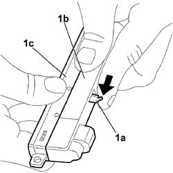
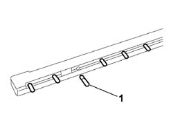

5550D17 THIRD BRAKE LIGHT BULB(S) - R.R
- Path
- Procedures > 55 ELECTRICAL EQUIPMENT > 5550 WARNING AND MANOEUVRING INDICATORS > 5550D BRAKE AND REVERSING LIGHTS > 5550D17 THIRD BRAKE LIGHT BULB(S) - R.R
- Kind
- repair procedure (removal / refitting; the operation number is the code)
- Applies to
- all engines; all production periods
- Interactive page
- https://sloeber94.github.io/elrnDB-fCrm/en/#/194000772
Applies to: all engines; all production periods
 Removing
Removing
 Refitting
Refitting- Open the tailgate.
- Turn the ignition key to the OFF position.
- Disconnect the negative battery terminal.
Description | Connector | |
|---|---|---|
BATTERY |
Op. 7015A58 INTERNAL TAILGATE MOULDING (ONE) - R+R
Op. 5550D16 THIRD BRAKE LIGHT - R+R
1. Raise the anchorage clips (1a) and separate lens (1b) from the tail-light case (1c).

Applies to: all engines; all production periods
1. Extract the bulb from the housing.

Applies to: all engines; all production periods
Refitting
Removing- Fit the bulb in its seat.
- Fit the lens in the light case and press against the anchorage clips until it clicks home.
Op. 5550D16 THIRD BRAKE LIGHT - R+R
Op. 7015A58 INTERNAL TAILGATE MOULDING (ONE) - R+R
- Connect the negative battery terminal.
Description | Connector | |
|---|---|---|
BATTERY |